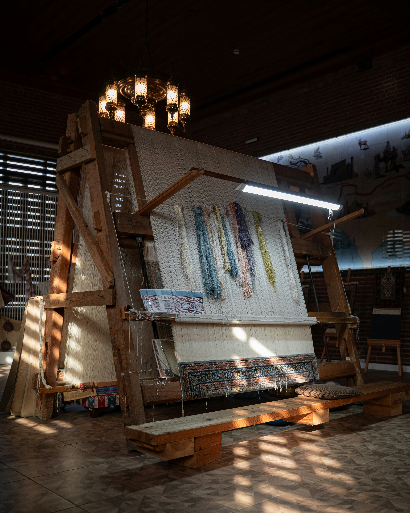
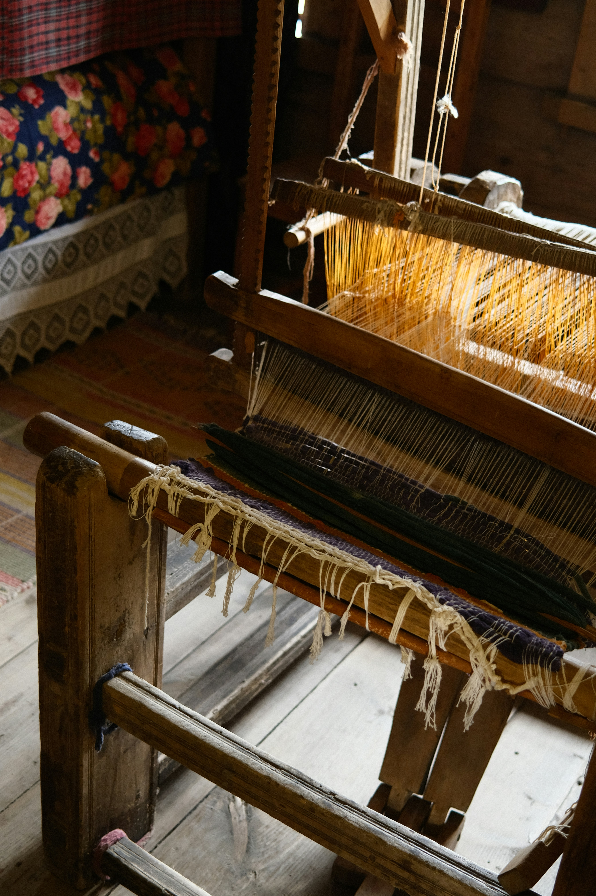
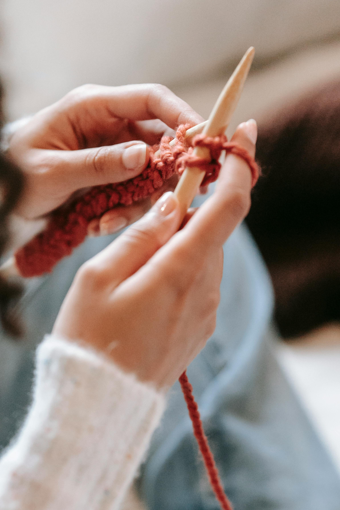

El telar vertical es un bastidor de madera donde los hilos de urdimbre se disponen en posición vertical; el tejido se realiza de arriba hacia abajo. Se emplea para fabricar piezas grandes (mantas, tapices) usando hilos de lana, algodón u otras fibras.

El telar horizontal presenta los hilos de urdimbre tensos entre dos vigas paralelas a nivel del suelo. A menudo incluye pedales u otros mecanismos para levantar hilos (lizos). Se usa para tejer telas más anchas o pesadas, como cobijas, alfombras y mantas, con fibras de lana, algodón o hilados sintéticos.

La técnica de dos agujas (tejido de punto) consiste en formar una malla entrelazando hilos mediante lazadas unidas entre sí. Se realiza con dos agujas puntiagudas (rectas o circulares) y hilos de lana, algodón o fibras sintéticas. Es muy popular para confeccionar prendas y accesorios (suéteres, bufandas, gorros, etc.)